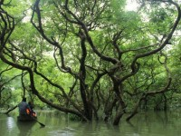

Swamp Forest, Ratargul

Swamp Forest, Ratargul, Sylhet. Popular Search Terms:sylhet tourist spotsylhet tourismratargulsylhet tourist spotstourist place in sylhettourist places in sylhetsylhet tourist placeratargul sylhettourist spot in sylhetratargul swamp forestsylhet bangladesh tourist spottourist spots in sylhetratargul sylhet bangladeshratargul forest sylhet bangladeshratar gultourist spot of sylhetratargul swamp forest sylhetratargul toursylhet tour placeratargul forest sylhetsylhet travel placesratargul swamp forest sylhet bangladeshsylhet